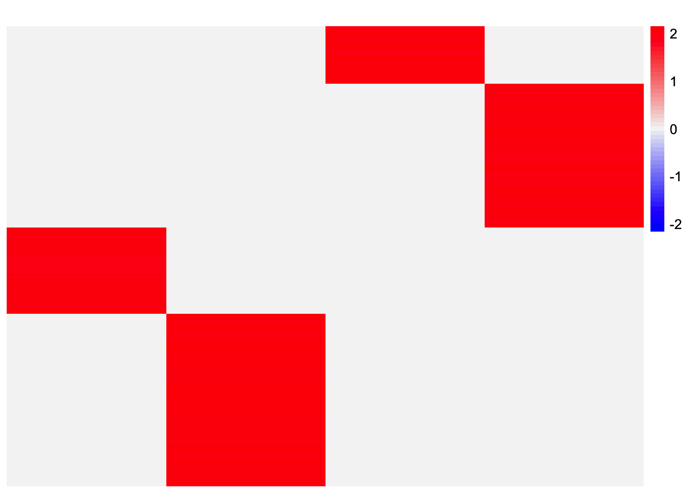
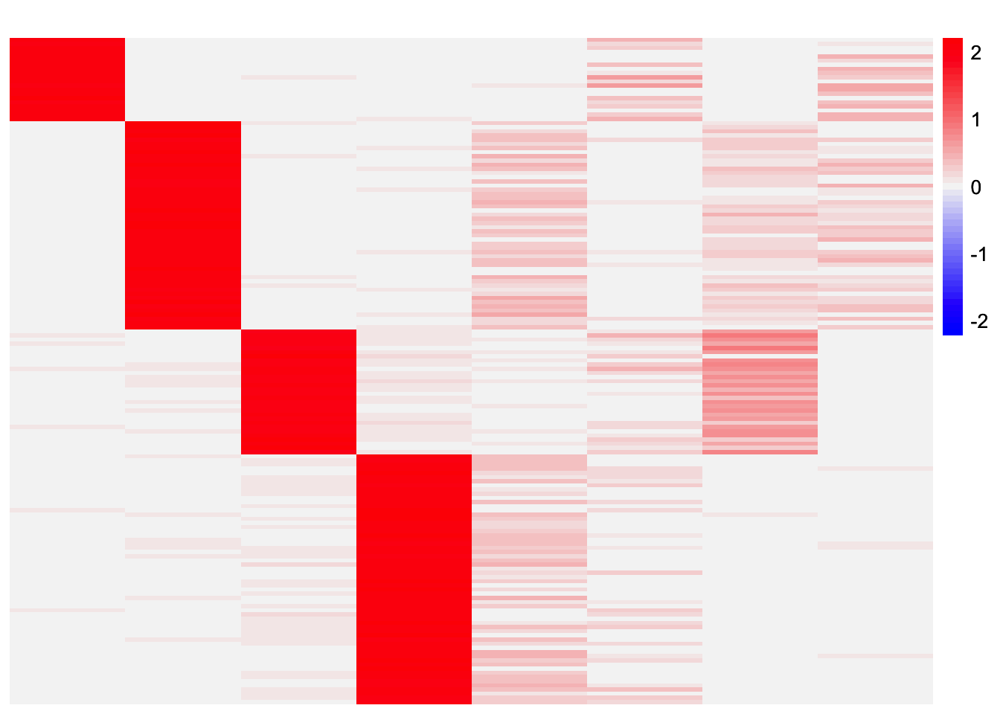

unbal_nonoverlap_setting
Annie Xie
2025-09-06
Last updated: 2025-09-11
Checks: 7 0
Knit directory: stability_selection/
This reproducible R Markdown analysis was created with workflowr (version 1.7.1). The Checks tab describes the reproducibility checks that were applied when the results were created. The Past versions tab lists the development history.
Great! Since the R Markdown file has been committed to the Git repository, you know the exact version of the code that produced these results.
Great job! The global environment was empty. Objects defined in the global environment can affect the analysis in your R Markdown file in unknown ways. For reproduciblity it’s best to always run the code in an empty environment.
The command set.seed(20250906) was run prior to running
the code in the R Markdown file. Setting a seed ensures that any results
that rely on randomness, e.g. subsampling or permutations, are
reproducible.
Great job! Recording the operating system, R version, and package versions is critical for reproducibility.
Nice! There were no cached chunks for this analysis, so you can be confident that you successfully produced the results during this run.
Great job! Using relative paths to the files within your workflowr project makes it easier to run your code on other machines.
Great! You are using Git for version control. Tracking code development and connecting the code version to the results is critical for reproducibility.
The results in this page were generated with repository version 78b2403. See the Past versions tab to see a history of the changes made to the R Markdown and HTML files.
Note that you need to be careful to ensure that all relevant files for
the analysis have been committed to Git prior to generating the results
(you can use wflow_publish or
wflow_git_commit). workflowr only checks the R Markdown
file, but you know if there are other scripts or data files that it
depends on. Below is the status of the Git repository when the results
were generated:
Ignored files:
Ignored: .DS_Store
Ignored: .Rhistory
Untracked files:
Untracked: analysis/bal_nonoverlap_setting.Rmd
Untracked: analysis/baltree_setting.Rmd
Untracked: analysis/sparse_overlap_setting.Rmd
Note that any generated files, e.g. HTML, png, CSS, etc., are not included in this status report because it is ok for generated content to have uncommitted changes.
These are the previous versions of the repository in which changes were
made to the R Markdown
(analysis/unbal_nonoverlap_setting.Rmd) and HTML
(docs/unbal_nonoverlap_setting.html) files. If you’ve
configured a remote Git repository (see ?wflow_git_remote),
click on the hyperlinks in the table below to view the files as they
were in that past version.
| File | Version | Author | Date | Message |
|---|---|---|---|---|
| Rmd | 78b2403 | Annie Xie | 2025-09-11 | Update exploration of unbalanced non-overlap setting |
| html | 6788639 | Annie Xie | 2025-09-11 | Build site. |
| Rmd | 58eae7c | Annie Xie | 2025-09-11 | Add exploration of stability selection in unbal nonoverlap |
Introduction
In this analysis, we are interested in testing stability selection approaches in the unbalanced non-overlapping setting. At a high level, the stability selection involves 1) splitting the data into two subsets, 2) applying the method to each subset, 3) choosing the components that have high correspondence across the two sets of results. We will test two different approaches to step 1). The first approach is splitting the data by splitting the columns. This approach feels intuitive since we are interested in the loadings matrix, which says something about the samples in the dataset. In a population genetics application, one could argue that all of the chromosomes are undergoing evolution independently, and so you could split the data by even vs. odd chromosomes to get two different datasets. However, in a single-cell RNA-seq application, it feels more natural to split the data by cells – this feels more like creating sub-datasets compared to splitting by genes (unless you want to make some assumption that the genes are pulled from a “population”, but I think that feels less natural). This motivates the second approach: splitting the data by splitting the rows.
library(dplyr)
library(ggplot2)
library(pheatmap)source('code/visualization_functions.R')
source('code/stability_selection_functions.R')Data Generation
In this analysis, we will focus on the unbalanced non-overlapping setting.
sim_star_data <- function(args) {
set.seed(args$seed)
n <- sum(args$pop_sizes)
p <- args$n_genes
K <- length(args$pop_sizes)
FF <- matrix(rnorm(K * p, sd = rep(args$branch_sds, each = p)), ncol = K)
LL <- matrix(0, nrow = n, ncol = K)
for (k in 1:K) {
vec <- rep(0, K)
vec[k] <- 1
LL[, k] <- rep(vec, times = args$pop_sizes)
}
E <- matrix(rnorm(n * p, sd = args$indiv_sd), nrow = n)
Y <- LL %*% t(FF) + E
YYt <- (1/p)*tcrossprod(Y)
return(list(Y = Y, YYt = YYt, LL = LL, FF = FF, K = ncol(LL)))
}pop_sizes <- c(20,50,30,60)
n_genes <- 1000
branch_sds <- rep(2,4)
indiv_sd <- 1
seed <- 1
sim_args = list(pop_sizes = pop_sizes, branch_sds = branch_sds, indiv_sd = indiv_sd, n_genes = n_genes, seed = seed)
sim_data <- sim_star_data(sim_args)This is a heatmap of the true loadings matrix:
plot_heatmap(sim_data$LL)
| Version | Author | Date |
|---|---|---|
| 6788639 | Annie Xie | 2025-09-11 |
GBCD
In this section, I try stability selection with the GBCD method. In my experiments, I’ve found that GBCD tends to return extra factors (partially because the point-Laplace initialization will yield extra factors).
Stability Selection via Splitting Columns
First, I try splitting the data by splitting the columns.
set.seed(1)
X_split_by_col <- stability_selection_split_data(sim_data$Y, dim = 'columns')gbcd_fits_by_col <- list()
for (i in 1:length(X_split_by_col)){
gbcd_fits_by_col[[i]] <- gbcd::fit_gbcd(X_split_by_col[[i]],
Kmax = 4,
prior = ebnm::ebnm_generalized_binary,
verbose = 0)$L
}[1] "Form cell by cell covariance matrix..."
user system elapsed
0.005 0.000 0.005
[1] "Initialize GEP membership matrix L..."
Adding factor 1 to flash object...
Wrapping up...
Done.
Adding factor 2 to flash object...
Adding factor 3 to flash object...
Adding factor 4 to flash object...
Wrapping up...
Done.Warning in report.maxiter.reached(verbose.lvl): Maximum number of iterations
reached. user system elapsed
1.213 0.027 1.242
[1] "Estimate GEP membership matrix L..."Warning in report.maxiter.reached(verbose.lvl): Maximum number of iterations
reached. user system elapsed
9.205 0.221 9.428
[1] "Estimate GEP signature matrix F..."
Backfitting 4 factors (tolerance: 1.19e-03)...
Difference between iterations is within 1.0e-02...
Wrapping up...
Done.
user system elapsed
0.303 0.006 0.311
[1] "Form cell by cell covariance matrix..."
user system elapsed
0.003 0.000 0.003
[1] "Initialize GEP membership matrix L..."
Adding factor 1 to flash object...
Wrapping up...
Done.
Adding factor 2 to flash object...
Adding factor 3 to flash object...
Adding factor 4 to flash object...
Wrapping up...
Done.Warning in report.maxiter.reached(verbose.lvl): Maximum number of iterations
reached. user system elapsed
0.776 0.022 0.799
[1] "Estimate GEP membership matrix L..."
user system elapsed
2.107 0.036 2.144
[1] "Estimate GEP signature matrix F..."
Backfitting 7 factors (tolerance: 1.19e-03)...
--Estimate of factor 6 is numerically zero!
--Estimate of factor 7 is numerically zero!
An update to factor 5 decreased the objective by 2.155e-03.
Difference between iterations is within 1.0e+01...
An update to factor 5 decreased the objective by 1.789e-03.
Difference between iterations is within 1.0e+00...
--Estimate of factor 5 is numerically zero!
An update to factor 5 decreased the objective by 3.811e-03.
Difference between iterations is within 1.0e-01...
Wrapping up...
Done.
user system elapsed
0.536 0.012 0.548 This is heatmap of the loadings estimate from the first subset:
plot_heatmap(gbcd_fits_by_col[[1]], colors_range = c('blue','gray96','red'), brks = seq(-max(abs(gbcd_fits_by_col[[1]])), max(abs(gbcd_fits_by_col[[1]])), length.out = 50))
This is a heatmap of the loadings estimate from the second subset:
plot_heatmap(gbcd_fits_by_col[[2]], colors_range = c('blue','gray96','red'), brks = seq(-max(abs(gbcd_fits_by_col[[2]])), max(abs(gbcd_fits_by_col[[2]])), length.out = 50))
| Version | Author | Date |
|---|---|---|
| 6788639 | Annie Xie | 2025-09-11 |
results_by_col <- stability_selection_post_processing(gbcd_fits_by_col[[1]], gbcd_fits_by_col[[2]], threshold = 0.99)
L_est_by_col <- results_by_col$LThis is a heatmap of the final loadings estimate:
plot_heatmap(L_est_by_col, colors_range = c('blue','gray96','red'), brks = seq(-max(abs(L_est_by_col)), max(abs(L_est_by_col)), length.out = 50))
In this case, the method was able to get rid of the extra factors. Something to think about is how to reconcile slight differences in the estimates – do I just pick one estimate? do I take an average?
Stability Selection via Splitting Rows
Now, we try splitting the rows:
set.seed(1)
X_split_by_row <- stability_selection_split_data(sim_data$Y, dim = 'rows')gbcd_fits_by_row <- list()
for (i in 1:length(X_split_by_row)){
gbcd_fits_by_row[[i]] <- gbcd::fit_gbcd(X_split_by_row[[i]],
Kmax = 4,
prior = ebnm::ebnm_generalized_binary,
verbose = 0)$L
}[1] "Form cell by cell covariance matrix..."
user system elapsed
0.001 0.000 0.002
[1] "Initialize GEP membership matrix L..."
Adding factor 1 to flash object...
Wrapping up...
Done.
Adding factor 2 to flash object...
Adding factor 3 to flash object...
Adding factor 4 to flash object...
Wrapping up...
Done.Warning in report.maxiter.reached(verbose.lvl): Maximum number of iterations
reached. user system elapsed
4.519 0.063 4.581
[1] "Estimate GEP membership matrix L..."Warning in report.maxiter.reached(verbose.lvl): Maximum number of iterations
reached. user system elapsed
7.509 0.136 7.669
[1] "Estimate GEP signature matrix F..."
Backfitting 4 factors (tolerance: 1.91e-04)...
Difference between iterations is within 1.0e-02...
Wrapping up...
Done.
user system elapsed
0.076 0.001 0.078
[1] "Form cell by cell covariance matrix..."
user system elapsed
0.006 0.000 0.005
[1] "Initialize GEP membership matrix L..."
Adding factor 1 to flash object...
Wrapping up...
Done.
Adding factor 2 to flash object...
Adding factor 3 to flash object...
Adding factor 4 to flash object...
Wrapping up...
Done.Warning in report.maxiter.reached(verbose.lvl): Maximum number of iterations
reached. user system elapsed
0.753 0.013 0.766
[1] "Estimate GEP membership matrix L..."
user system elapsed
2.728 0.043 2.773
[1] "Estimate GEP signature matrix F..."
Backfitting 8 factors (tolerance: 2.19e-03)...
--Estimate of factor 7 is numerically zero!
Difference between iterations is within 1.0e+02...
--Estimate of factor 5 is numerically zero!
--Estimate of factor 6 is numerically zero!
Difference between iterations is within 1.0e+01...
--Estimate of factor 8 is numerically zero!
Difference between iterations is within 1.0e+00...
Difference between iterations is within 1.0e-01...
Wrapping up...
Done.
user system elapsed
10.592 0.266 10.860 This is heatmap of the loadings estimate from the first subset:
plot_heatmap(gbcd_fits_by_row[[1]], colors_range = c('blue','gray96','red'), brks = seq(-max(abs(gbcd_fits_by_row[[1]])), max(abs(gbcd_fits_by_row[[1]])), length.out = 50))
This is heatmap of the loadings estimate from the second subset:
plot_heatmap(gbcd_fits_by_row[[2]], colors_range = c('blue','gray96','red'), brks = seq(-max(abs(gbcd_fits_by_row[[2]])), max(abs(gbcd_fits_by_row[[2]])), length.out = 50))
| Version | Author | Date |
|---|---|---|
| 6788639 | Annie Xie | 2025-09-11 |
results_by_row <- stability_selection_post_processing(gbcd_fits_by_row[[1]], gbcd_fits_by_row[[2]], threshold = 0.99)
L_est_by_row <- results_by_row$LThis is a heatmap of the final loadings estimate:
plot_heatmap(L_est_by_row, colors_range = c('blue','gray96','red'), brks = seq(-max(abs(L_est_by_row)), max(abs(L_est_by_row)), length.out = 50))In this case, the method only recovers two of the four factors. Visually, it looks like both sets of results have all four components. But perhaps the cosine similarity was not quite high enough to exceed the very high threshold (0.99).
Note if I reduce the threshold a little bit (from 0.99 to 0.98), then it does find all four factors.
results_by_row_threshold0.98 <- stability_selection_post_processing(gbcd_fits_by_row[[1]], gbcd_fits_by_row[[2]], threshold = 0.98)
L_est_by_row_threshold0.98 <- results_by_row_threshold0.98$Lplot_heatmap(L_est_by_row_threshold0.98, colors_range = c('blue','gray96','red'), brks = seq(-max(abs(L_est_by_row_threshold0.98)), max(abs(L_est_by_row_threshold0.98)), length.out = 50))
EBCD
In this section, I try stability selection with the GBCD method. When
given a Kmax value that is larger than the true number of
components, I’ve found that EBCD usually returns extra factors. So in
this section, when I run EBCD, I give the method double the true number
of components.
Stability Selection via Splitting Columns
set.seed(1)
ebcd_fits_by_col <- list()
for (i in 1:length(X_split_by_col)){
ebcd_fits_by_col[[i]] <- ebcd::ebcd(t(X_split_by_col[[i]]),
Kmax = 8,
ebnm_fn = ebnm::ebnm_generalized_binary)$EL
}This is a heatmap of the estimated loadings from the first subset:
plot_heatmap(ebcd_fits_by_col[[1]], colors_range = c('blue','gray96','red'), brks = seq(-max(abs(ebcd_fits_by_col[[1]])), max(abs(ebcd_fits_by_col[[1]])), length.out = 50))
This is a heatmap of the estimated loadings from the second subset:
plot_heatmap(ebcd_fits_by_col[[2]], colors_range = c('blue','gray96','red'), brks = seq(-max(abs(ebcd_fits_by_col[[2]])), max(abs(ebcd_fits_by_col[[2]])), length.out = 50))
| Version | Author | Date |
|---|---|---|
| 6788639 | Annie Xie | 2025-09-11 |
results_by_col <- stability_selection_post_processing(ebcd_fits_by_col[[1]], ebcd_fits_by_col[[2]], threshold = 0.99)
L_est_by_col <- results_by_col$LThis is a heatmap of the final loadings estimate:
plot_heatmap(L_est_by_col, colors_range = c('blue','gray96','red'), brks = seq(-max(abs(L_est_by_col)), max(abs(L_est_by_col)), length.out = 50))The method recovers all four components.
Stability Selection via Splitting Rows
set.seed(1)
ebcd_fits_by_row <- list()
for (i in 1:length(X_split_by_row)){
ebcd_fits_by_row[[i]] <- ebcd::ebcd(t(X_split_by_row[[i]]),
Kmax = 8,
ebnm_fn = ebnm::ebnm_generalized_binary)$EL
}This is a heatmap of the loadings estimate from the first subset:
plot_heatmap(ebcd_fits_by_row[[1]], colors_range = c('blue','gray96','red'), brks = seq(-max(abs(ebcd_fits_by_row[[1]])), max(abs(ebcd_fits_by_row[[1]])), length.out = 50))
This is a heatmap of the loadings estimate from the second subset:
plot_heatmap(ebcd_fits_by_row[[2]], colors_range = c('blue','gray96','red'), brks = seq(-max(abs(ebcd_fits_by_row[[2]])), max(abs(ebcd_fits_by_row[[2]])), length.out = 50))
| Version | Author | Date |
|---|---|---|
| 6788639 | Annie Xie | 2025-09-11 |
results_by_row <- stability_selection_post_processing(ebcd_fits_by_row[[1]], ebcd_fits_by_row[[2]], threshold = 0.99)
L_est_by_row <- results_by_row$LThis is a heatmap of the final loadings estimate:
plot_heatmap(L_est_by_row, colors_range = c('blue','gray96','red'), brks = seq(-max(abs(L_est_by_row)), max(abs(L_est_by_row)), length.out = 50))
In this case, only three of the four components are recovered. Given that in the first loadings estimate, only of the factors contains the effects of two components, I don’t think reducing the similarity threshold would allow the method to recover all four factors (unless the threshold is significantly reduced).
CoDesymNMF
In this section, I try stability selection with the CoDesymNMF
method. Similar to EBCD, when given a Kmax value that is
larger than the true number of components, the method usually returns
extra factors. Note that in this section, when I run CoDesymNMF, I give
the method double the true number of components.
Stability Selection via Splitting Columns
codesymnmf_fits_by_col <- list()
for (i in 1:length(X_split_by_col)){
cov_mat <- tcrossprod(X_split_by_col[[i]])/ncol(X_split_by_col[[i]])
codesymnmf_fits_by_col[[i]] <- codesymnmf::codesymnmf(cov_mat, 8)$H
}This is a heatmap of the estimated loadings from the first subset:
plot_heatmap(codesymnmf_fits_by_col[[1]], colors_range = c('blue','gray96','red'), brks = seq(-max(abs(codesymnmf_fits_by_col[[1]])), max(abs(codesymnmf_fits_by_col[[1]])), length.out = 50))This is a heatmap of the estimated loadings from the second subset:
plot_heatmap(codesymnmf_fits_by_col[[2]], colors_range = c('blue','gray96','red'), brks = seq(-max(abs(codesymnmf_fits_by_col[[2]])), max(abs(codesymnmf_fits_by_col[[2]])), length.out = 50))
| Version | Author | Date |
|---|---|---|
| 6788639 | Annie Xie | 2025-09-11 |
results_by_col <- stability_selection_post_processing(codesymnmf_fits_by_col[[1]], codesymnmf_fits_by_col[[2]], threshold = 0.99)
L_est_by_col <- results_by_col$Lplot_heatmap(L_est_by_col, colors_range = c('blue','gray96','red'), brks = seq(-max(abs(L_est_by_col)), max(abs(L_est_by_col)), length.out = 50))
The method recovers all four components.
Stability Selection via Splitting Rows
codesymnmf_fits_by_row <- list()
for (i in 1:length(X_split_by_row)){
cov_mat <- tcrossprod(X_split_by_row[[i]])/ncol(X_split_by_row[[i]])
codesymnmf_fits_by_row[[i]] <- codesymnmf::codesymnmf(cov_mat, 8)$H
}This is a heatmap of the estimated loadings from the first subset:
plot_heatmap(codesymnmf_fits_by_row[[1]], colors_range = c('blue','gray96','red'), brks = seq(-max(abs(codesymnmf_fits_by_row[[1]])), max(abs(codesymnmf_fits_by_row[[1]])), length.out = 50))
This is a heatmap of the estimated loadings from the second subset:
plot_heatmap(codesymnmf_fits_by_row[[2]], colors_range = c('blue','gray96','red'), brks = seq(-max(abs(codesymnmf_fits_by_row[[2]])), max(abs(codesymnmf_fits_by_row[[2]])), length.out = 50))
| Version | Author | Date |
|---|---|---|
| 6788639 | Annie Xie | 2025-09-11 |
results_by_row <- stability_selection_post_processing(codesymnmf_fits_by_row[[1]], codesymnmf_fits_by_row[[2]], threshold = 0.99)
L_est_by_row <- results_by_row$LThis is a heatmap of the final loadings estimate:
plot_heatmap(L_est_by_row, colors_range = c('blue','gray96','red'), brks = seq(-max(abs(L_est_by_row)), max(abs(L_est_by_row)), length.out = 50))
The method returns three of the four components. Again, looking at the estimates, it seems like both contain all four components. However, they might not be similar enough to exceed the similarity threshold. If I reduce the threshold from 0.99 to 0.98, then the method recovers all four components.
results_by_row <- stability_selection_post_processing(codesymnmf_fits_by_row[[1]], codesymnmf_fits_by_row[[2]], threshold = 0.98)
L_est_by_row <- results_by_row$LThis is a heatmap of the final loadings estimate:
plot_heatmap(L_est_by_row, colors_range = c('blue','gray96','red'), brks = seq(-max(abs(L_est_by_row)), max(abs(L_est_by_row)), length.out = 50))Observations
Overall, it seems like splitting by the columns does a better job at recovering all of the factors. One possible explanation is because both subsets contain data for all of the samples, the individual loadings estimates are more likely to contain the four components. On the other hand, when the data is split by rows, each subset may not contain all of the information needed to recover the components.
sessionInfo()R version 4.3.2 (2023-10-31)
Platform: aarch64-apple-darwin20 (64-bit)
Running under: macOS 15.6
Matrix products: default
BLAS: /Library/Frameworks/R.framework/Versions/4.3-arm64/Resources/lib/libRblas.0.dylib
LAPACK: /Library/Frameworks/R.framework/Versions/4.3-arm64/Resources/lib/libRlapack.dylib; LAPACK version 3.11.0
locale:
[1] en_US.UTF-8/en_US.UTF-8/en_US.UTF-8/C/en_US.UTF-8/en_US.UTF-8
time zone: America/Chicago
tzcode source: internal
attached base packages:
[1] stats graphics grDevices utils datasets methods base
other attached packages:
[1] pheatmap_1.0.12 ggplot2_3.5.2 dplyr_1.1.4 workflowr_1.7.1
loaded via a namespace (and not attached):
[1] tidyselect_1.2.1 viridisLite_0.4.2 farver_2.1.2
[4] fastmap_1.2.0 lazyeval_0.2.2 codesymnmf_0.0.0.9000
[7] promises_1.3.3 digest_0.6.37 lifecycle_1.0.4
[10] processx_3.8.4 invgamma_1.1 magrittr_2.0.3
[13] compiler_4.3.2 rlang_1.1.6 sass_0.4.10
[16] progress_1.2.3 tools_4.3.2 yaml_2.3.10
[19] data.table_1.17.6 knitr_1.50 prettyunits_1.2.0
[22] htmlwidgets_1.6.4 scatterplot3d_0.3-44 RColorBrewer_1.1-3
[25] Rtsne_0.17 withr_3.0.2 purrr_1.0.4
[28] flashier_1.0.56 grid_4.3.2 git2r_0.33.0
[31] fastTopics_0.6-192 colorspace_2.1-1 scales_1.4.0
[34] gtools_3.9.5 cli_3.6.5 rmarkdown_2.29
[37] crayon_1.5.3 generics_0.1.4 RcppParallel_5.1.10
[40] rstudioapi_0.16.0 httr_1.4.7 pbapply_1.7-2
[43] cachem_1.1.0 stringr_1.5.1 splines_4.3.2
[46] parallel_4.3.2 softImpute_1.4-3 vctrs_0.6.5
[49] Matrix_1.6-5 jsonlite_2.0.0 callr_3.7.6
[52] hms_1.1.3 mixsqp_0.3-54 ggrepel_0.9.6
[55] irlba_2.3.5.1 horseshoe_0.2.0 trust_0.1-8
[58] plotly_4.11.0 jquerylib_0.1.4 tidyr_1.3.1
[61] ebcd_0.0.0.9000 glue_1.8.0 ebnm_1.1-34
[64] ps_1.7.7 cowplot_1.1.3 gbcd_0.2-17
[67] uwot_0.2.3 stringi_1.8.7 Polychrome_1.5.1
[70] gtable_0.3.6 later_1.4.2 quadprog_1.5-8
[73] tibble_3.3.0 pillar_1.10.2 htmltools_0.5.8.1
[76] truncnorm_1.0-9 R6_2.6.1 rprojroot_2.0.4
[79] evaluate_1.0.4 lattice_0.22-6 RhpcBLASctl_0.23-42
[82] SQUAREM_2021.1 ashr_2.2-66 httpuv_1.6.15
[85] bslib_0.9.0 Rcpp_1.0.14 deconvolveR_1.2-1
[88] whisker_0.4.1 xfun_0.52 fs_1.6.6
[91] getPass_0.2-4 pkgconfig_2.0.3